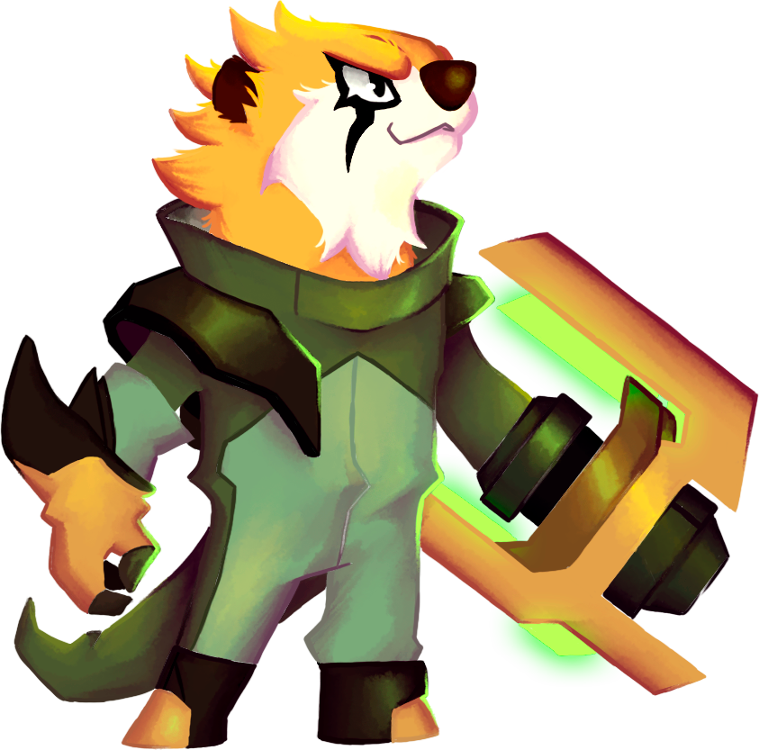

Welcome to Otter's Hell, a fast-paced, thrilling roguelite that combines action, strategy, and a good dose of humor. Developed in Unity, this game immerses you in an intergalactic battle between two rival species: otters and hamsters. You will play as Sparkels, the last hope of the otter army, on a mission to rescue the kidnapped baby otters and restore balance to the galaxy.
Story
The story of Otter's Hell begins in a universe where otters once peacefully dominated multiple star systems.However, the ruthless Hamster Empire emerged from the shadows, conquering planet after planet, until the otter resistance was crushed.
Now, only Sparkles remains, a brave otter warrior, embarking on a final mission: free the captured baby otters and defeat the tyrannical hamsters. During her adventure, Sparkles will travel through different planets, where Sparkels must face hordes of enemies, save her companions, and fight with different bosses.
Gameplay
Otter's Hell is a fast-paced roguelite where every run is a unique experience. Procedurally
generated levels ensure that no two attempts are the same, making strategy and improvisation
crucial to success.
-
Interplanetary exploration: Travel across diverse worlds, each with its own visual style, enemies, and challenges.
-
Fast and strategic combat: Use Sparkels' special abilities, upgrade her gear, and unlock new weapons to face the Hamster Empire.
-
Unlock powers and secrets: As you progress, discover ancient artifacts that grant you new skills and critical advantages in battle.
-
Rescue the baby otters: Your main mission is to free the kidnapped otter pups held captive by the Hamster Empire, a challenge that will take you to the most dangerous corners of the galaxy.
Developed in Unity
The game was developed using Unity, which enabled the implementation of advanced features like procedural level generation and smooth combat mechanics. Unity provided the flexibility to create dynamic, detailed worlds with fluid animations and striking visual effects.
Conclusion
Otter's Hell is more than just an action game: it's an epic adventure that blends the best of the roguelite genre with a fun narrative and memorable characters. Get ready to lead the otter resistance and save the galaxy from the evil grip of the Hamster Empire. Are you ready for battle?